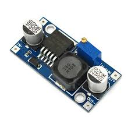
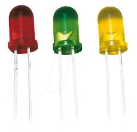
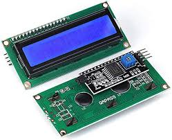

THE INSTRUMENTS USED IN THE SYSTEM
  


A Water Level Monitoring System is a comprehensive solution designed to monitor, manage, and control water levels in tanks, reservoirs, and other storage units. It ensures optimal water usage, prevents overflow or underflow, and enhances the reliability of water supply systems. Below are the detailed components and functionalities of such a system:
WORKING PRINCIPLE DESCRIPTION
Working Principle Monitoring: Sensors continuously measure the water level and send data to the control unit. Processing: The control unit processes the data and determines if any action is required (e.g., turning on a pump). Control: Based on the processed data, the control unit activates actuators to adjust the water level. Alerting: If water levels reach critical thresholds, alarms are triggered, and notifications are sent via communication modules. Display: Real-time data is displayed on the interface for users to monitor and make informed decisions.
WHERE CAN THE SYSTEM BE APPLIED? Domestic Water Tanks: Ensures a consistent water supply for household use. Industrial Reservoirs: Manages water levels in large storage units for industrial processes. Agricultural Irrigation: Optimizes water usage for crop irrigation. Municipal Water Systems: Manages water distribution and storage in urban areas.
working principle
Monitoring: Sensors continuously measure the water level and send data to the control unit. Processing: The control unit processes the data and determines if any action is required (e.g., turning on a pump). Control: Based on the processed data, the control unit activates actuators to adjust the water level. Alerting: If water levels reach critical thresholds, alarms are triggered, and notifications are sent via communication modules. Display: Real-time data is displayed on the interface for users to monitor and make informed decisions.
sensor category

sim800l GSM module
what are the benefits of using this system?
1. Efficient Water Usage
Reduced Wastage: By accurately monitoring water levels, the system prevents overflow, thereby conserving water.
Optimal Usage: Ensures water is used efficiently, especially in areas with limited water resources, contributing to sustainable water management practices.
2. Cost Savings
Lower Utility Bills: By minimizing water wastage and optimizing pump operation, the system reduces electricity and water bills.
Maintenance Savings: Predictive maintenance based on real-time data can prevent costly repairs and extend the lifespan of equipment.
3. Enhanced Reliability
Consistent Supply: Ensures a steady water supply by automatically managing inflows and outflows, avoiding interruptions due to human error.
Redundancy: Backup systems and alerts ensure that issues are addressed promptly, maintaining system uptime.
4. Remote Monitoring and Control
Convenience: Users can monitor and control water levels remotely via web interfaces or mobile apps, reducing the need for physical presence.
Timely Alerts: Real-time notifications and alarms for critical levels enable quick responses to potential issues, preventing damage or service interruptions.
5. Environmental Impact
Sustainability: By optimizing water usage and reducing wastage, the system contributes to environmental conservation.
Resource Management: Promotes sustainable management of water resources, essential for agricultural, industrial, and municipal applications.
6. Data Logging and Analytics
Historical Data: Collection and storage of data allow for trend analysis and better decision-making.
Predictive Maintenance: Analysis of historical data helps predict equipment failures, enabling proactive maintenance and reducing downtime.
7. Scalability and Flexibility
Adaptability: Can be scaled and customized to fit various sizes and types of water storage units, from small household tanks to large industrial reservoirs.
Integration: Easily integrates with other smart systems and IoT platforms, enhancing overall infrastructure management.
8. Safety
Preventive Measures: Automatically takes preventive actions like shutting off pumps or closing valves to avoid overflows or dry runs, protecting equipment and property.
Health: Ensures water quality by maintaining appropriate levels and preventing stagnation.
9. User-Friendly Interface
Ease of Use: Simple interfaces with clear visualizations make it easy for users to monitor and manage the system.
Accessibility: Accessible from various devices, including smartphones, tablets, and computers, providing flexibility for users.
10. Regulatory Compliance
Standards Adherence: Helps institutions comply with local and international water management regulations by providing accurate data and control over water resources.
Reporting: Facilitates easy generation of reports required for regulatory compliance and audits.
Specific Advantages for Institutions like Makerere University
Campus-wide Water Management: Ensures consistent water supply across various buildings and facilities, enhancing the overall infrastructure reliability.
Educational Tool: Provides a practical example of sustainable practices and advanced technology for students studying environmental science, engineering, and related fields.
Cost Efficiency: Helps the university manage operational costs by reducing water and energy expenses.
Research and Development: Acts as a live system for research and development in water management technologies, offering students and faculty a hands-on learning experience.

setup of the system
Features and Tasks of of the water level management system
-
A robust water level monitoring system includes a variety of features designed to ensure efficient, reliable, and user-friendly operation. Here are the key features:
1. __Real-Time Monitoring__
Continuous Measurement: Sensors continuously measure water levels and provide real-time data. Instant Alerts: Immediate notifications for critical conditions, such as low or high water levels.
2. **Advanced Sensor Technology**
Ultrasonic Sensors: Non-contact measurement for precise water level readings. Float Sensors: Simple and reliable for direct level measurement. Capacitive Sensors: Suitable for various types of liquids, including water. Pressure Transducers: Measure the pressure exerted by the water column for accurate depth readings.
3. **Automated Control**
Pump Activation/Deactivation: Automatically turns pumps on or off based on water level thresholds. Valve Control: Regulates water inflow and outflow to maintain desired levels. Smart Algorithms: Utilizes algorithms to optimize pump and valve operations for efficiency and longevity.
4. **User Interface**
Digital Displays: LCD or LED screens showing real-time water levels and system status. Graphical Interface: Visual dashboards with graphs, charts, and historical data for easy interpretation. Touchscreen Controls: Intuitive and user-friendly for easy configuration and monitoring.
5. **Communication and Connectivity**
Wi-Fi/Ethernet: Enables remote access and monitoring through web interfaces or mobile apps. GSM Modules: Send SMS alerts for critical water levels or system failures. IoT Integration: Connects to IoT platforms for advanced data analytics and integration with other smart systems.
6. **Data Logging and Analytics**
Historical Data Storage: Logs water levels and system performance data for trend analysis and reporting. Predictive Analytics: Uses historical data to predict future water level trends and potential system issues. Report Generation: Automatic generation of reports for regulatory compliance and management review.
7. **Power Management**
Primary Power Supply: Operates on mains electricity. Backup Power: Battery or UPS to ensure continuous operation during power outages.
8. **Customizable Alerts and Notifications**
Configurable Thresholds: Set custom thresholds for low and high water levels. Multiple Alert Channels: Alerts via SMS, email, or in-app notifications.
9. **Security Features**
User Authentication: Ensures that only authorized personnel can access and control the system. Data Encryption: Protects data transmitted over networks from unauthorized access.
10. **Maintenance and Diagnostics**
Self-Diagnostics: System performs regular self-checks and alerts users to any faults or maintenance needs. Remote Troubleshooting: Allows for remote diagnostics and troubleshooting to quickly address issues. Specific Features for Institutional Applications (e.g., Makerere University) Scalability: Can be scaled to monitor multiple tanks or reservoirs across a large campus. Integration with Campus Systems: Connects with other campus infrastructure systems for comprehensive management. Educational Tools: Features that support educational purposes, such as data access for research and teaching.